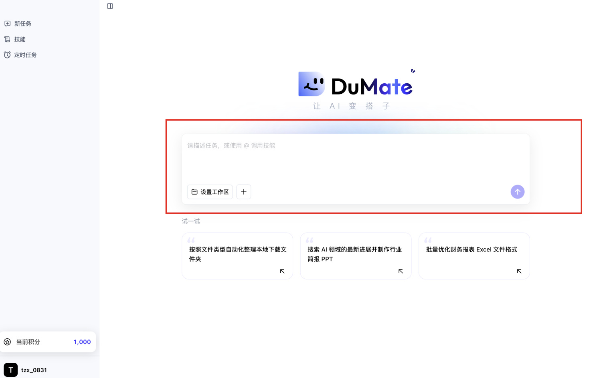
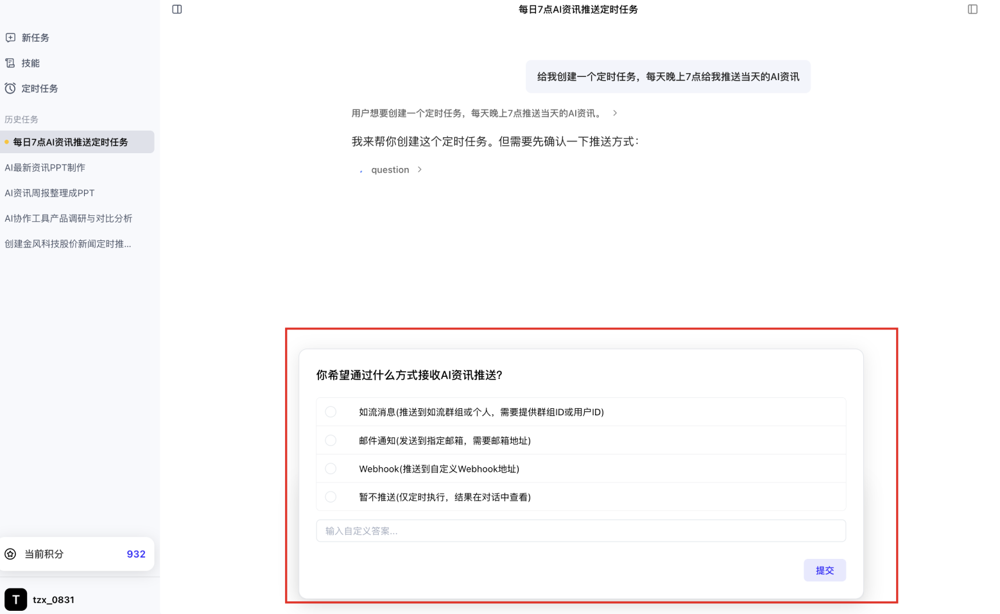
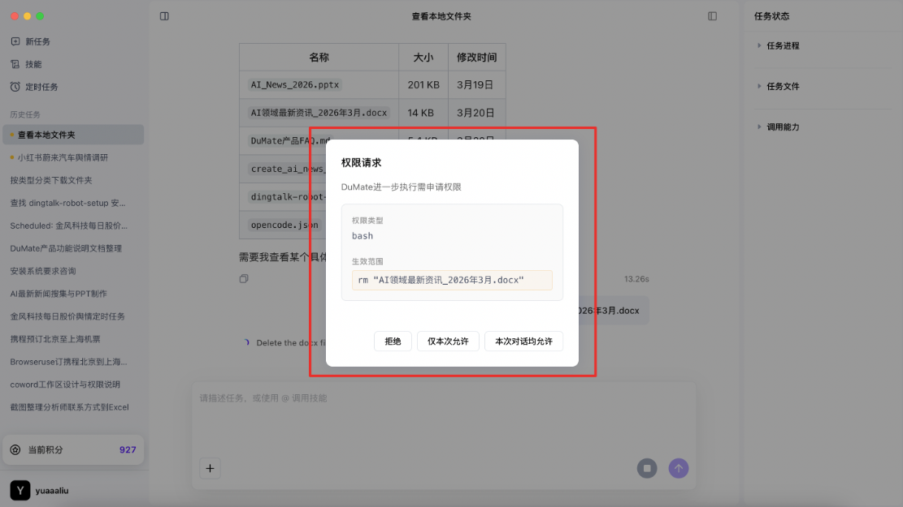
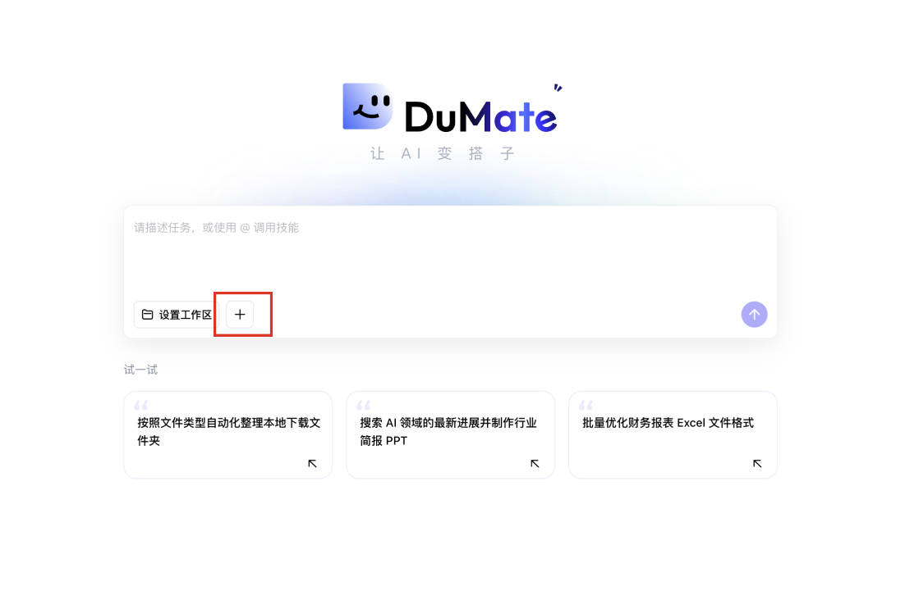
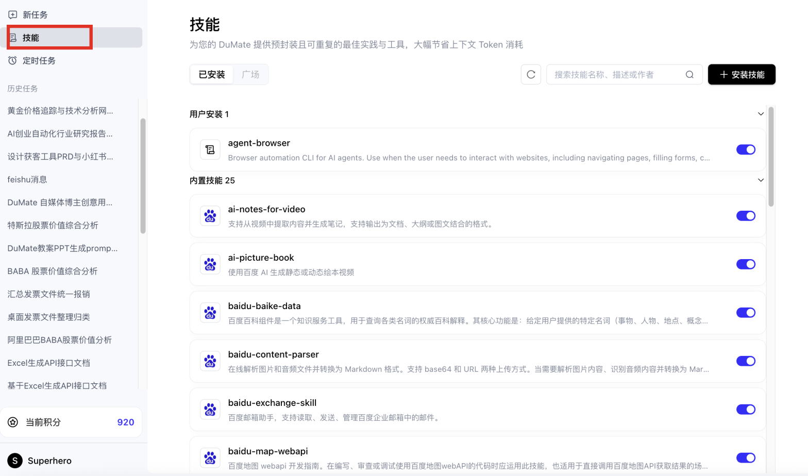
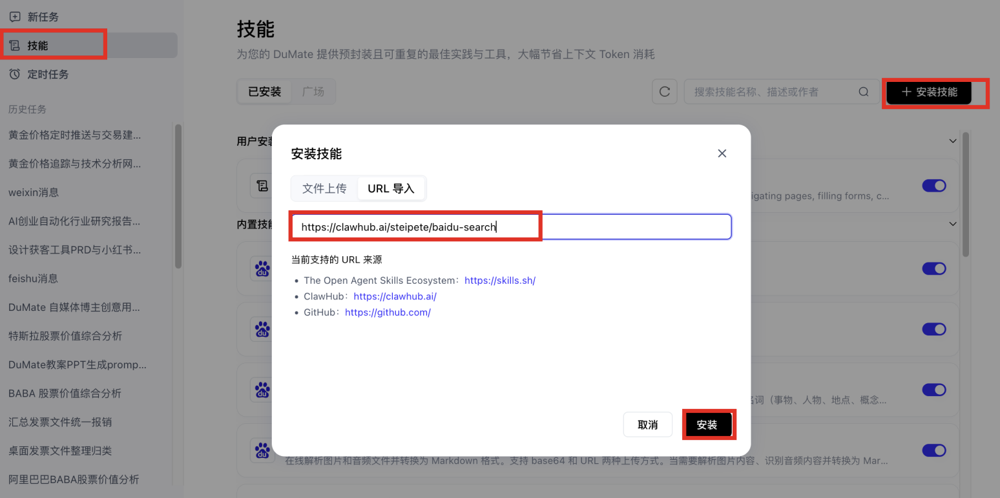
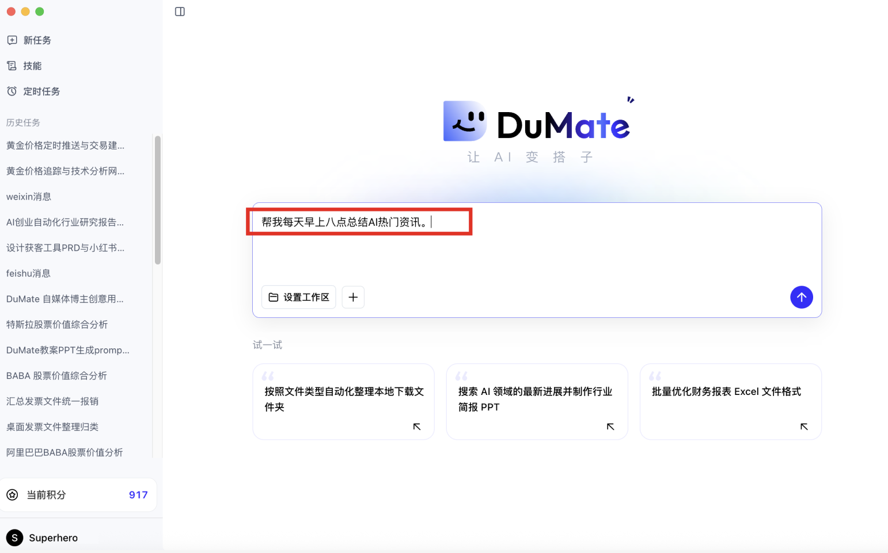
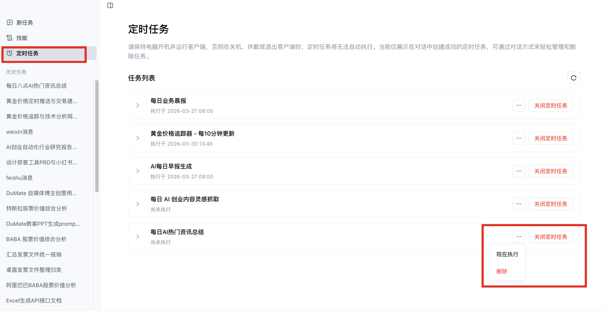
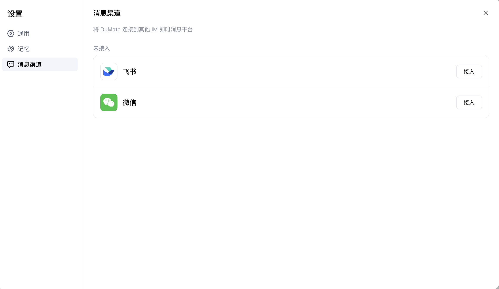
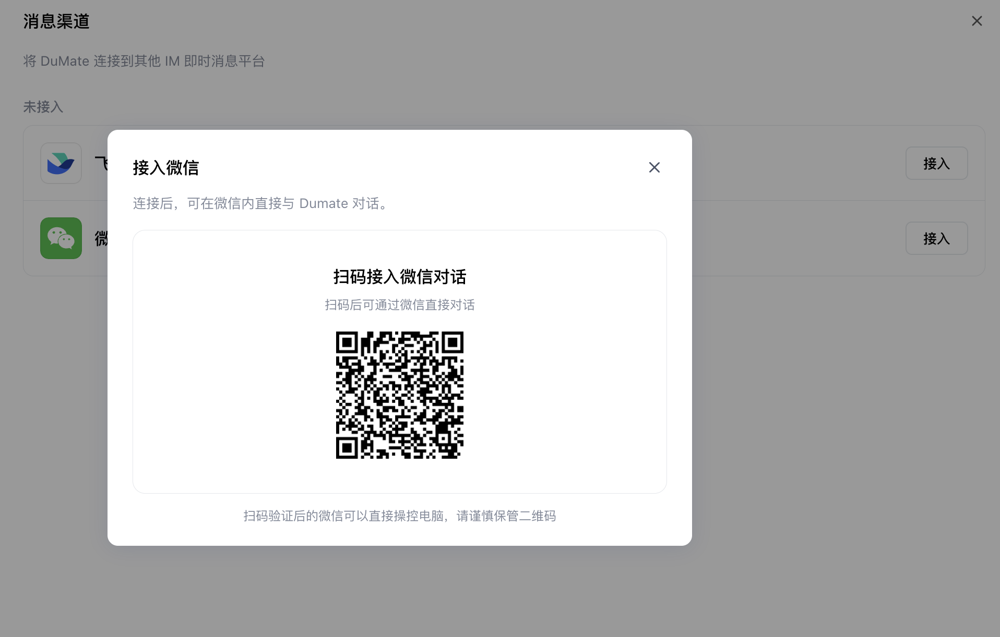

国产 Codex 之百度搭子 DuMate 从 0 到 1 保姆级上手教程
这不是概念介绍，是一份可以照着操作的完整教程。从下载安装到工作区设置、第一个任务、文件整理、数据分析、浏览器自动化和定时报告，每一步都有操作路径和可复制的提示词。
1. DuMate 是什么：把「问答」变成「交付」
DuMate 是百度推出的桌面级 AI 办公智能体。和普通聊天 AI 不同，它的重点是完成流程。你告诉它目标，它自动拆解步骤、执行操作、产出文件。
把「问答」变成「交付」
DuMate 不是多一个聊天窗口。它读材料、整理文件、生成 Excel/PPT/PDF、操作浏览器、定时执行任务——这些才是它的核心能力。
减少重复操作
适合处理「材料很多、步骤很碎、人工很烦」的工作：年中汇报、竞品调研、日报周报、表格清洗、资料归档、网页信息抓取。
先做小任务，再做复杂任务
第一次使用时先从一个测试文件夹开始，确认它怎么读文件、怎么申请权限、怎么保存结果，再逐步尝试数据分析和自动化任务。
2. 安装与准备：先把环境搭好
DuMate 的上手很简单：下载安装、登录账号、创建工作区、完成第一个任务。
2.1 下载并安装
- 打开官网：https://www.dumate.cn/。
- 下载桌面端。当前支持 macOS M 系列芯片 与 Windows 10 及以上。
- 按系统提示完成安装。
- 启动后使用百度账号或百度智能云账号登录。没有账号可以用手机号注册。
2.2 创建工作区
工作区是 DuMate 访问本地文件的边界范围。建议新手不要一开始就授权整个电脑，而是先新建一个专用文件夹，把要处理的资料放进去。
推荐文件夹结构
DuMate_Workspace/ 01_输入资料/ 02_中间过程/ 03_最终交付/ 04_归档备份/
为什么要这样做
方便 DuMate 批量读取材料，也方便你检查结果。涉及客户资料、合同、财务数据时，先把任务范围收窄，后面再按需扩大。
2.3 Windows 安全提示处理
Windows 端如果提示「未检测到安全工作区」，需要以管理员身份打开 PowerShell，启用虚拟化/容器相关能力，然后重启电脑：
dism.exe /online /enable-feature /featurename:VirtualMachinePlatform /all /norestart dism.exe /online /enable-feature /featurename:Containers /all /norestart
3. 界面布局与权限操作
主界面有四个关键区域，先把它们的位置和用途记清楚，后面操作时才不会迷路。

新任务
创建一段新的任务对话。每个复杂任务建议独立开一个新任务，避免上下文混杂干扰。
技能
查看内置技能和用户安装的技能。常用技能可以开启，不常用的可以关闭以节省上下文空间。
定时任务
查看自动执行的任务、历史运行状态，也可以立即执行、关闭或删除已有任务。
积分
查看当前可用积分。复杂任务、模型调用和部分官方技能会消耗积分。
3.1 主对话区：一句话下任务
在输入框里直接描述目标。涉及具体文件时，点「+」添加文件，或先把文件放到工作区里再告诉 DuMate 去读取。
3.2 澄清表单：认真填写，减少返工
当你下达复杂任务时，DuMate 可能会弹出一个澄清表单，让你补充输出格式、风格、数据范围等。

3.3 权限确认：风险操作看清楚再允许
当任务涉及编辑、删除、本地文件操作、外部发送等风险行为时，DuMate 会弹出权限确认框。三个选项的用法如下：
| 选项 | 适合场景 | 操作说明 |
|---|---|---|
| 拒绝 | 你不确定它要改什么、删什么、发到哪里 | 先拒绝，然后让 DuMate 解释其操作计划，确认后再重新执行 |
| 本次允许 | 只允许这一步执行 | 新手最推荐，每次风险操作都会单独确认，风险可控 |
| 本轮对话均允许 | 你已经确认整轮任务都在同一范围内执行 | 适合重复读写同一个工作区的任务，减少反复确认的打扰 |

4. 第一个任务：从整理一个文件夹开始
新手不要一上来就做全公司经营分析。最好的第一个任务是低风险、材料明确、结果容易检查的任务。下面示范一个「整理测试文件夹」的完整流程。
请帮我整理当前工作区里的文件。 目标： 1. 按文件类型和内容主题分成 3 到 5 个文件夹。 2. 对文件名不清楚的文件，改成"日期_主题_文件类型"的命名。 3. 不要删除任何文件，只移动和重命名。 4. 先给我一个整理规则和待操作清单，等我确认后再执行。 5. 完成后生成一份"整理说明.md"，写清楚每个文件夹放了什么。

4.1 让 DuMate 先规划再执行
在提示词里固定加一句「先给我计划，等我确认再执行」。这个习惯对文件改名、批量移动、生成对外材料等容易返工的任务特别有用。
4.2 检查结果时重点看三件事
- 输出文件是否在你指定的文件夹里。
- 文件名、目录、格式是否符合你一开始说的规则。
- 有没有删除、覆盖、外发等你没有明确允许的动作。
5. 本地文件处理：让 DuMate 读懂你的资料
本地文件处理是最适合新手练习的能力。先让 DuMate 整理文件夹、提取信息、汇总周报，再进阶到生成 PPT、Excel、PDF 等交付物。
5.1 场景：年中汇报资料整理
把半年周报、项目纪要、销售数据、竞品资料放进工作区，让 DuMate 先读资料、再提炼成果、最后输出汇报材料。
请读取工作区"01_输入资料"中的周报、会议纪要、项目复盘和数据表。 请帮我生成一份年中汇报材料： 1. 先按项目归类，提炼每个项目的目标、动作、结果、问题。 2. 汇总成"核心成绩、关键数据、典型案例、风险问题、下半年计划"五个部分。 3. 输出一份 Word 文档和一份 12 页以内的 PPT 大纲。 4. 所有结论后面标明来自哪个文件，方便我复核。
5.2 场景：合同、纪要、报告的关键信息提取
适合行政、法务、销售、咨询岗位。不要只说「总结一下」，要指定字段。
请读取工作区里的合同 PDF，并提取成 Excel： 字段包括：合同名称、客户名称、签署日期、金额、付款节点、交付物、违约条款、续约日期、需要我关注的风险。 如果某个字段缺失，请写"原文未找到"，不要猜测。 完成后再生成一份 800 字以内的风险摘要。
5.3 场景：文件夹清理与批量命名
文件夹清理一定要按「先扫描 → 给清单 → 再动手」的顺序来做。
| 任务 | 推荐提示词方向 | 风险控制 |
|---|---|---|
| 下载文件夹分类 | 按文件内容和用途分类，不只按后缀名 | 不删除，只移动 |
| 图片重命名 | 按图片内容、日期、项目名命名 | 保留原文件副本 |
| 重复文件整理 | 先列出疑似重复项和判断依据 | 人工确认后再删除 |
5.4 场景：生成可交付文件
需要正式交付时，直接指定交付物类型、保存位置、页数、字段、格式。
适合方案汇报、产品介绍、调研结论。写清页数、受众、风格、必须包含的页面。
适合数据台账、清洗结果、指标对比。写清字段、口径、分组方式和排序规则。
适合正式报告、纪要、手册。写清目录结构、字数、证据来源和图表要求。
6. 数据分析：从 Excel 到可视化报告
数据分析任务的关键是「讲清口径」。把 Excel、CSV、数据说明放进工作区后，告诉 DuMate 字段含义、指标公式、分析目标和输出格式。
6.1 标准操作流程
6.2 运营复盘模板
请读取工作区里的销售表、投放表、商品表和用户评论表，帮我做一次活动复盘。 请完成： 1. 清洗数据：统一日期、商品 ID、渠道名称，处理重复和缺失。 2. 核心指标：GMV、订单数、客单价、转化率、ROI、退款率、毛利率。 3. 找出表现最好的 10 个 SKU 和最需要优化的 10 个 SKU。 4. 结合评论内容，提炼用户喜欢点、差评点和下一轮卖点。 5. 输出一份 Excel 明细表和一份可视化报告。 6. 报告里每个结论都要说明依据，不确定的地方单独列为"待人工确认"。
6.3 市场调研模板
请基于工作区中的竞品资料、官网链接清单和已有表格，生成一份市场调研报告。 报告结构： 1. 竞品基本信息对比。 2. 价格、功能、用户评价、渠道打法对比。 3. 我们可借鉴的 5 个动作。 4. 我们需要避开的 5 个风险。 5. 最后输出 PPT 大纲和 Excel 对比表。
6.4 数据任务一定要验算
| 检查项 | 可以追问 DuMate 的话 |
|---|---|
| 数据是否读全 | 请告诉我读取了哪些文件、每个文件多少行、是否有读取失败。 |
| 指标口径 | 请列出 GMV、ROI、退款率的计算公式，并指出用到哪些字段。 |
| 异常值 | 请列出被你判定为异常的数据，以及为什么判定异常。 |
| 结论依据 | 请把每个结论对应的数据表、字段、计算过程列出来。 |
7. 浏览器自动化：让 DuMate 操作网页
浏览器能力适合网页搜索、后台填报、页面截图、评论采集、竞品信息整理等任务。官方浏览器插件配合 Chrome 使用，并复用用户已登录状态。
7.1 什么时候用到浏览器插件
让 DuMate 打开网页、搜索信息、截图、整理结果。
在你已登录的浏览器里执行操作，减少重复登录验证。
读取商品页、评论页、内容页，把信息整理成表格。
7.2 插件安装步骤
- 确认电脑已安装 Chrome，且 DuMate 客户端正在运行。
- 从官方文档提供的链接下载 DuMate Browser Extension 压缩包。
- 解压到本地固定目录（如 Windows 的
C:\dumate-browser-extension或 macOS 的用户目录）。 - 打开 Chrome 的
chrome://extensions/。 - 开启「开发者模式」，点击「加载已解压的扩展程序」，选择解压目录。
- 点击扩展图标，确认状态显示为「已连接」。
7.3 浏览器任务提示词
请使用已连接的 Chrome 浏览器，帮我收集这 5 个竞品链接的信息。 需要提取：产品名称、价格、核心卖点、用户差评、页面促销信息、截图。 请先打开第一个链接做样例，给我确认字段格式。 确认后再批量处理剩余链接，最后输出 Excel 和一份简短分析报告。
8. Skills 技能：把经验打包成可复用能力
Skills 是 DuMate 从「会聊天」走向「会干专门活」的关键。你可以把特定领域的知识、流程、工具调用方式打包起来，反复调用。


8.1 技能管理的三个操作
| 操作 | 入口 | 说明 |
|---|---|---|
| 查看技能 | 左侧「技能」 | 看内置技能和已安装技能，判断哪些适合当前任务。 |
| 安装技能 | 技能页右上角「安装技能」 | 可用 URL、zip 或 md 文件导入。 |
| 启用/禁用/更新/删除 | 技能卡片详情 | 预置技能通常不支持删除或更新，自定义技能可以自由管理。 |
8.2 什么任务适合做成 Skill
每周都做的工作：周报、竞品监控、日报汇总。
有固定输入、固定步骤、固定输出格式的工作流程。
需要特定行业知识或分析框架的任务，如广告投放复盘、财务指标解读。
请把我们刚才完成"竞品月度监控报告"的过程整理成一个可复用 Skill。 要求： 1. 写清输入材料：竞品链接表、历史价格表、评论导出表。 2. 写清执行步骤：采集、清洗、归类、分析、生成报告。 3. 写清输出标准：Excel 明细、PPT 大纲、800 字摘要。 4. 写清质量检查：数据行数、重复项、异常价格、来源链接。 5. 以后我只要说"执行竞品月报 Skill"，就能按这个流程跑。
9. 定时任务：把一次性任务变成自动流程
定时任务适合每天/每周都要做的工作。需要注意的是：定时任务在本地运行，需要电脑开机并保持客户端运行。


9.1 推荐先从这四类任务开始
每日资讯摘要
每天早上 9 点抓取 AI、行业、竞品新闻，生成 500 字摘要和 5 条重点链接。
竞品价格监控
每周一读取指定竞品链接，记录价格、促销、差评变化，输出 Excel。
销售日报整理
每天晚上读取当天销售表，汇总 GMV、转化、异常商品，生成日报。
舆情与评论监测
每天定时查看品牌关键词、用户评论、平台反馈，提炼风险和机会。
请创建一个定时任务： 任务名称：AI 行业早报 执行时间：每个工作日早上 8:30 任务内容： 1. 搜索过去 24 小时 AI 办公、智能体、营销自动化相关资讯。 2. 去重后选出 10 条最值得关注的内容。 3. 生成 500 字摘要、3 条机会判断、3 条风险提醒。 4. 保存到工作区"03_最终交付/AI早报"文件夹。 5. 完成后通知我查看。
10. 微信、飞书等消息渠道：不只在桌面里工作
消息渠道适合接收任务通知、在移动端触发简单任务、把报告推送到常用办公工具。当前支持微信、飞书、如流、钉钉。
10.1 微信接入步骤
- 在 DuMate 左下角点击用户名。
- 进入「消息渠道」。
- 选择微信渠道，点击接入。
- 用手机微信扫码完成绑定。


10.2 飞书接入
飞书接入有扫码和手动两种方式。
| 方式 | 适合谁 | 注意点 |
|---|---|---|
| 扫码接入 | 个人用户 | 步骤少，扫码即可完成。 |
| 手动接入 | 企业用户、有飞书开放平台权限的人 | 需要创建应用、配置权限、事件与回调、发布应用。 |
10.3 渠道接入后的典型用法
任务完成后，推送摘要或提醒你回到电脑查看。
在微信/飞书里发一句话，触发简单查询或固定流程。
把定时报告发给自己或团队相关成员，减少手动同步。
11. 安全、审计与积分
你真正需要关心的不是「AI 会不会聪明」，而是「它会不会乱动我的电脑、泄露我的资料、乱扣我的额度」。
11.1 三重安全边界
DuMate 主要围绕你授权的工作区处理文件。新手只授权任务需要的文件夹即可。
涉及删除、编辑、外发等高风险操作时，会让 DuMate 先列计划，由你确认后再执行。
任务执行过程可在流式输出中实时查看，包括文件处理、脚本执行、网页浏览等。
11.2 积分与订阅方案
| 方案 | 适合用户 | 推荐用途 |
|---|---|---|
| 免费版 | 初次体验、轻量任务 | 先用来跑文件整理、摘要、简单报告。 |
| Pro 版 | 日常高频办公用户 | 适合经常做汇报、数据分析、资料整理的人。 |
| Max 版 | 更重度的自动化和分析用户 | 适合长任务、多文件、多图表、多报告输出。 |
11.3 交付前自查模板
请在交付前做一次自查： 1. 哪些文件被读取、移动、修改或新建？ 2. 是否存在删除、覆盖、外发、提交表单等风险操作？ 3. 输出结论里哪些是确定的，哪些需要人工复核？ 4. 数据分析中使用了哪些字段和计算公式？ 5. 请把以上内容写成"交付说明.md"。
12. 常见问题与处理方法
| 问题 | 可能原因 | 处理方法 |
|---|---|---|
| 任务跑偏 | 目标太宽、材料太多、输出格式没讲清 | 让它暂停，重新补充任务范围、样例和验收标准。 |
| 浏览器插件未连接 | DuMate 未启动、扩展未正确加载 | 启动 DuMate，重启客户端，在 Chrome 扩展页禁用再启用插件。 |
| 定时任务没执行 | 电脑关机、客户端未运行、本地网络异常 | 保持电脑开机和 DuMate 运行，进入定时任务页查看历史状态。 |
| 生成文件打不开 | 本地没有对应应用，或文件格式异常 | 让 DuMate 重新导出为通用格式（PDF、Markdown、CSV）。 |
| 数据结论不可信 | 数据源不完整、口径不清、公式有误 | 追问读取行数、字段、公式、异常值，并要求输出复核清单。 |
| 积分用完 | 长任务或多轮复杂任务消耗较多 | 先拆小任务，减少反复生成大文件，查看订阅和积分页面按需升级。 |
13. 完整实战：用 DuMate 做一份年中汇报
这一章把前面学到的能力串起来，完整跑一次真实任务：从准备资料，到让 DuMate 读取文件、提炼内容、生成报告，再到检查和修订。
13.1 准备资料文件夹
在工作区建一个「年中汇报实战」文件夹，把资料按类型放好。
年中汇报实战/ 01_周报和月报/ 02_项目资料/ 03_销售和运营数据/ 04_会议纪要/ 05_历史汇报模板/ 06_最终输出/
13.2 第一步：让 DuMate 先盘点资料
请读取当前工作区"年中汇报实战"文件夹。 先不要生成正式报告，请先帮我做资料盘点： 1. 列出你读取到的文件清单。 2. 按"周报月报、项目资料、数据表、会议纪要、历史模板"分类。 3. 标出可能重复、缺失、打不开或内容不清楚的文件。 4. 给我一份建议的汇报结构，等我确认后再进入下一步。
13.3 第二步：确认报告结构
看到 DuMate 的资料清单后，先检查有没有漏文件。确认无误后，再让它按你的受众调整汇报结构。汇报给老板，重点突出结果、数据、风险和计划；汇报给客户，重点突出进展、价值和下一步安排。
请按"管理层汇报"的标准调整结构。 我的报告需要包括： 1. 上半年目标回顾 2. 核心成果和关键数据 3. 重点项目进展 4. 典型案例 5. 当前问题和风险 6. 下半年计划 请每一部分写清需要使用哪些文件和数据。
13.4 第三步：生成初稿和数据表
请基于确认后的结构，生成两份文件： 1. "年中汇报初稿.docx"：正文控制在 3000 字以内，表达正式、清晰。 2. "年中汇报数据台账.xlsx"：整理所有关键数据，包含来源文件、指标名称、数值、时间范围、备注。 要求： - 不确定的数据不要猜，标为"待确认"。 - 所有重要结论都要标明来源文件。 - 文件保存到"06_最终输出"。
13.5 第四步：把初稿改成 PPT 大纲
请把"年中汇报初稿.docx"改成一份 12 页以内的 PPT 大纲。 每页包含： 1. 页面标题 2. 3 到 5 个要点 3. 建议使用的数据或图表 4. 需要放入的来源文件 请先输出大纲，不要直接生成 PPT，等我确认页面结构后再继续。
13.6 第五步：检查和修订
正式交付前，让 DuMate 自查一次，再人工复核关键数据。不要跳过这一步。
请对最终输出做交付前检查： 1. 检查报告中的数字是否都能在数据台账中找到。 2. 检查每个结论是否有来源文件。 3. 列出所有"待确认"的地方。 4. 检查是否有空泛表述，帮我改成更具体的表达。 5. 生成一份"交付前检查清单.md"。
14. 一页速查：DuMate 提示词公式
遇到新任务时，可以直接套用这套通用公式。
请你扮演【角色】。 我的目标是【任务目标】。 你可以使用的材料在【工作区/文件/链接】。 请先做【计划/清单/字段设计】，等我确认后再执行。 执行时请注意【权限边界/不要删除/不要外发/保留原文件】。 最终交付【文件格式/页数/字段/保存位置】。 完成后请输出【交付说明/数据来源/风险提醒/复核清单】。
重点写清：读哪些文件、按什么规则整理、是否允许移动/重命名/删除。
重点写清：字段口径、指标公式、输出图表、验算方式。
重点写清：执行频率、触发条件、通知方式、失败时怎么处理。